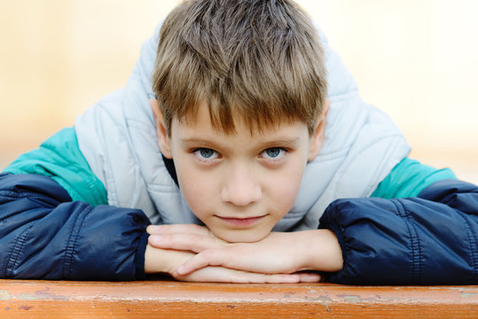
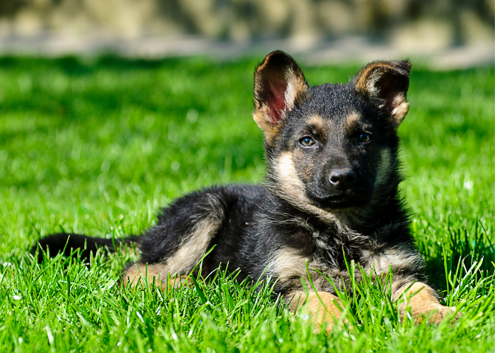
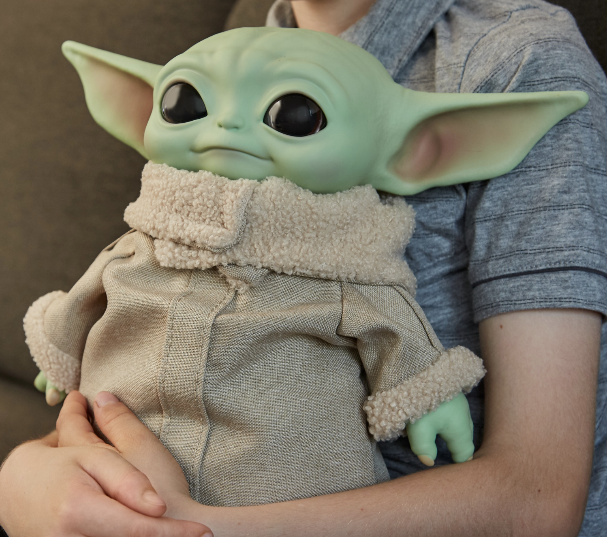

Andrés Herrero Martín
Hey, my name is Andrés, I'm 9 and I'm from Badajoz, Spain. This is my very first webpage that I made at 𝒜𝓊𝓁𝒶 𝒮𝒶𝓃 𝑅🏵𝓆𝓊𝑒 in my e-Learning class.
(っ◔◡◔)っ I hope you like it!
Hey, my name is Andrés, I'm 9 and I'm from Badajoz, Spain. This is my very first webpage that I made at 𝒜𝓊𝓁𝒶 𝒮𝒶𝓃 𝑅🏵𝓆𝓊𝑒 in my e-Learning class.
(っ◔◡◔)っ I hope you like it!

Charlie
This is my puppy Charlie, He's only 3 months old and he likes to play all day long. He loves chewing on bones and... shoes. I love him so much!
He's the best!
This is my puppy Charlie, He's only 3 months old and he likes to play all day long. He loves chewing on bones and... shoes. I love him so much!
He's the best!

My favorite toy
This is my favorite toy. My brother bought it for my birthday last year. It's Baby Yoda from Star Wars, my favorite movie.
I play with it everyday!